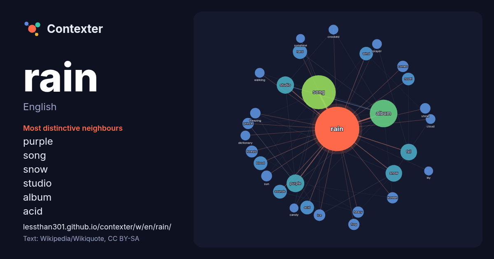

English · word of the day list
rain
The words found around it in 1576 instances from English Wikipedia, Wikiquote and Hacker News.

Most distinctive neighbours
- purple 37×
- song 32×
- snow 31×
- studio 20×
- album 20×
- acid 19×
- hard 19×
- fall 19×
- blood 18×
- wind 17×
- frog 15×
- freezing 15×
- shine 15×
- sounds 14×
- crooked 13×
- korean 12×
- dictionary 12×
- comes 12×
- ice 12×
- walking 11×
× = how many times more often than in general English Wikipedia text.
Most frequent neighbours
- song 148
- album 97
- film 49
- american 46
- purple 40
- studio 38
- born 35
- fall 35
- snow 35
- hard 26
- acid 24
- blood 24
- sounds 24
- water 23
- wind 23
- band 21
- red 21
- released 21
- novel 20
- love 19
In context
- Rain or rainfall is a form of atmospheric precipitation composed of droplets of water aerosols that have condensed from atmospheric water vapor and fall Wikipedia snippets · Rain
- Look up Rain, rain, ràin, or räin in Wiktionary, the free dictionary. Rain is a type of precipitation in which liquid drops of water fall toward the surface Wikipedia snippets · Rain (disambiguation)
- "Rain, Rain, Go Away" is a popular English language nursery rhyme. It has a Roud Folk Song Index number of 19096 and many different variations of it have Wikipedia snippets · Rain Rain Go Away
- Sophie Rain is an American internet personality and online content creator. She went viral in late 2024 after announcing that she earned US$43 million Wikipedia snippets · Sophie Rain
- Rain Man is a 1988 American road comedy-drama film directed by Barry Levinson and written by Barry Morrow and Ronald Bass. It tells the story of abrasive Wikipedia snippets · Rain Man
- "No Rain" is a song by American rock band Blind Melon. It was released in 1993 as the second single from the band's debut album Blind Melon (1992). The Wikipedia snippets · No Rain
- known professionally as Rain and Bi (비; ['piː]), is a South Korean singer, songwriter, dancer, actor, and record producer. Rain's musical career includes Wikipedia snippets · Rain (entertainer)
- Rain Joan of Arc Phoenix (née Bottom; born November 21, 1972) is an American actress, musician, and singer. She is the older sister of Joaquin, Liberty Wikipedia snippets · Rain Phoenix
More English words
- art
- autumn
- bell
- bread
- bridge
- cat
- city
- climate
- clock
- death
- desert
- dog
- family
- food
- forest
- garden
- god
- gold
- health
- heart
- history
- honey
- horse
- island
- language
- life
- map
- mirror
- money
- mother
- mountain
- nature
- power
- road
- salt
- science
- shadow
- silence
- song
- star
- storm
- summer
- tea
- time
- train
- truth
- water
- winter
- work
Precomputed on 2026-10-09 with default settings (±5 words, medium corpus). The interactive map can refresh it with live data.